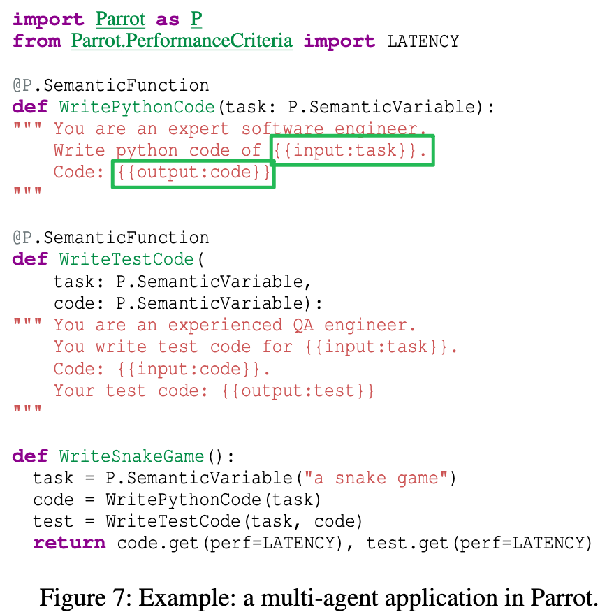

LLM推理服务论文
记录一些LLM推理优化相关的论文
FlashAttention
PageAttention
RadixAttention
RingAttention
RAGCache [Arxiv24]
Cache-Craft [SIGMOD25]
CacheBlend [EuroSys25]
Superposition [ICLR24]
AquaPipe [SIGMOD25]
AquaPipe: A Quality-Aware Pipeline for Knowledge Retrieval and Large Language Models [paper]
Similarity-based Retrieval
RetrievalAttention [Arxiv24]
RetrievalAttention: Accelerating Long-Context LLM Inference via Vector Retrieval [paper] [code]
RetroInfer [Arxiv25]
RetroInfer: A Vector-Storage Approach for Scalable Long-Context LLM Inference [paper] [[code] [author]
PQCache [SIGMOD25]
PQCache: Product Quantization-based KVCache for Long Context LLM Inference [paper] [code]
PQCache解决的LLM在long context下的推理效率问题。
长上下文推理对显存需求带来了挑战，如何在有限的显存空间实现高效的推理，同时保存高的输出质量，是一个被广泛关注的问题。
一个符合直觉的方法：selective attention，通过选择部分token进行注意力计算，显著降低了对内存和计算的需求。
现有selective attention方法可以分为：KV Cache dropping (Scissorhands, StreamingLLM [ICLR24], H2O [NIPS23])，KV Cache offloading (InfLLM [arxiv24] SparQAttention) 两类。
如下图所示，PQCache发现selective attention的执行和传统信息检索的Product Quantization的过程很像。
在LLM的注意力计算过程中，向量Q和所有的K进行相似度计算，然后经过softmax并与V加权求和得到输出X。
Q和K的相似度计算和信息检索中根据用户问题检索相似的top-k个向量的过程基本一致。

本文选择了开销比较低的Product Quantization来管理KV Cache。
PQ的索引构建和搜索过程如下图所示。
PQ Construction：
- 将每个KV Cache向量划分为m个子向量。
- 对所有KV Cache的每个子向量进行聚类，生成$2^b$个质心。
- 原来KV Cache向量对应的m个子向量编码为距离最近的质心id。
PQ Searching:
- 查询Q向量同样被划分为M个子向量。
- 每个子向量和对应的空间中$2^b$个向量计算相似度。
- 根据相似度计算原始向量与Q的相似性得分，选取TopK得分的向量。

PQCache的整体执行流程如下图所示：
- 在Prefilling阶段，正常计算得到每个输入token的KV Cache，并异步的卸载到CPU。
- CPU收到KV Cache之后，构建PQ用于后续检索。
- 在Decoding阶段，加载Centroids和PQ Codes，并计算TopK K向量。
- 根据计算的TopK向量，加载对应KV向量，并在GPU执行注意力计算。
在实现中，PQCache的KV Cache包含三种：initial tokens，middle tokens，and local tokens.
StreamingLLM中发现attention sink的现象，即initial tokens受到更多的注意力关注，对模型的回答质量有很大的影响。
local tokens表示最近计算的token。middle tokens表示历史KV Cache保存在CPU中。
PQCache将initial和local tokens保存在GPU，并维护一个窗口，超过窗口的local token被卸载到CPU。


Apt-Serve [SIGMOD25]
Apt-Serve: Adaptive Request Scheduling on Hybrid Cache for Scalable LLM Inference Serving [code] [paper]
Scheduling
Parrot [OSDI24]
Parrot: Efficient Serving of LLM-based Applications with Semantic Variable. [pdf] [code] [author]
Parrot这篇论文的主要贡献是提出了一个全新的推理workload：LLM Applications。
LLM Application是使用LLM来完成特定的任务（摘要，搜索，代码助手等），在一个应用中通常包含多个LLM请求。

以往推理优化系统是request-centric，即对用户的应用是透明的，“一视同仁”的处理用户的请求，缺少application-level的信息。
在LLM Application中，请求具有以下特点：
- 多个连续的LLM请求可能存在依赖关系。
- 即使在单个应用中，LLM请求可能具有不同的调度偏好。
- LLM的请求之前存在大量的相似性。
由于缺少application-level的信息，现有的推理优化主要有两个问题：
- 网络通信开销。
- 任务调度等待开销。

Parrot设计了一个Semantic Variables的编程抽象，用来将用户的执行逻辑暴露给推理服务端。
基于这个Semantic Variables可以获取到应用内的LLM请求的调用依赖关系，进而做一些系统上的优化，包括DAG-based analysis，Performance Objective Deduction，Application-Centric Scheduling等。
Preble [ICLR25]
Preble: Efficient Distributed Prompt Scheduling for LLM Serving [paper] [code]
现有推理系统的目标是充分利用GPU的计算资源，在调度请求时忽略了promt的共享前缀，因此存在冗余的计算开销。此外，简单的将共享前缀请求分配到同一个实例，会造成负载的不均衡。
Preble针对分布式推理场景，提出了一个prompt-aware的请求调度方法。
Preble首先对LLM workload进行分析，有以下4个观察：
- Prompt 的长度远大于 Output：在真实 workload 中，Prompt 比 Output 长 4–2494 倍。
- Prompt 高度共享：85%–97% 的前缀可被复用。
- 共享序列频繁复用：常见前缀平均被 8.6–126 个请求使用，但不同 workload 差异明显。
- 请求模式极端不均：请求到达间隔从微秒到数百秒不等，系统需同时处理高并发和稀疏请求。
Preble包含以下设计：
- globa-local两层的调度机制，global调度将请求分配到对应的实例，local调度负责在实例内部迭代的调度请求。
- global调度策略如下：
- 如果缓存命中的token数量大于未命中，将请求分配到具有最长共享前缀的实例。如果有多个实例满足，则优先分配到负载最少的实例。
- 如果缓存命中token数量小于未命中，将请求分配到最小cost的实例，cost计算逻辑如下：
- 实例的负载，计算一定时间窗口内，所有请求的计算负载，包括prefill和decode，根据长度计算。
- 驱逐开销，插入新请求可能要驱逐一些节点，计算被驱逐节点的开销。
- 请求的prefill开销，prefill未命中token的计算开销。
- 为了缓解实例之间的负载不均衡问题，preble采用了负载调整方法：
- 如果实例之间的负载超过一定阈值，负载大的请求调度到负载小的实例上。
- 将频繁复用的前缀复制到多个机器，减轻单个实例的过载问题。
- global根据prefill和decode的负载，优先将请求分配到decode重的实例。
- 为了保证调度的公平，local调度根据cache token的数量对请求划分多个组，每次按比例的从每个组选择请求，cache命中多的组多选。

TaiChi [Arxiv25]
Prefill-Decode Aggregation or Disaggregation? Unifying Both for Goodput-Optimized LLM Serving [paper]
本文对PD-aggregation和PD-disaggregation进行了详细的总结对比，并提出了一个PD-aggregation和PD-disaggregationd的混合推理方法，以实现LLM推理 Goodput的最大化。
Motivation
PD-aggregation和PD-disaggregation适应不同的SLO，无法适用于TTFT和TPOT均衡的SLO。
- PD-aggregation适合“TTFT严格，TPOT宽松”的SLO。在PD-aggregation中，所有实例参与prefill，因此可以实现较低的TTFT表现；但是由于prefill和decode相互干扰导致TPOT较高。
- PD-disaggregation适合“TPOP严格，TTFT宽松”的SLO。在PD-disaggregation中，prefill和decode有不同的实例单独服务，decode不再受prefill的影响，因此TPOT较低；但是由于只有部分实例参与prefill，因此TTFT较高；
Observation
- PD-aggregation的高TPOT来自prefill的干扰：compute-bound linear operations（矩阵乘），其中TPOT与干扰的密度呈线性关系。（干扰密度=prefill tokens / output tokens）。在PD-aggregation中，chunk size是个关键参数，减少chunk size可以减轻prefill和decode的干扰，从而降低TPOT；但同时增加了prefill迭代的次数从而增加了TTFT。（section 2.3）
- PD-disaggregation的高TTFT来自于请求的等待开销（同时包括prefill和decode的等待开销）。当调整PD的实例比例，TTFT随着P的下降后上升。这是因为增加P实例可以同时处理更多的prefiil任务，但随着D数量的减少，使得decode任务的排队时间大大上升，进而导致整体的TTFT延迟升高。（section 2.3.2）
- 通过调度资源可以实现TTFT和TPOT延迟的转移，例如，在PD-aggregation中，增加chunk size可以将TTFT的延迟转移到TPOT上，因为增加chunk size可以为prefill提供更多的空间，代价是增加了TPOT的延迟。同样，在PD-disaggregation中，增加更多的decode实例，可以将TPOT的延迟转移到TTFT上。(section 2.4)
Challenge
现有LLM推理服务在PD-aggregation和PD-disagregation中二选一，虽然可以通过增加chunk size和调整PD实例数量来实现延迟转移，但是不够灵活，不支持request-level 延迟转移。（2.5 Challenge 1）
request-level的TPOT降级同时受到批处理和输出token长度不确定的影响。增加chunk size虽然可以将TTFT延迟转移到TPOT，但是可能导致同一批次一些decode请求的TPOT超过SLO；短输出长度的请求更容易受到PD干扰（output tokens是干扰密度的分母，对干扰更加敏感）。（2.5 Challenge 2）
request-level的TTFT的降级需求不直接，需要同时考虑执行时间和排队时间。prefill的长度比较分散（2k-16k不等），对于短请求的TTFT容忍度更高可以被优先降级。然而如果请求排队时间过长，那么他降级的空间就会大幅减少。（2.5 Challenge 3）
Design
- TaiChi将实例划分为两部分：P-heavy（大chunk size）和D-heavy（小chunk size），每个实例都有一个控制chunk size的slider（$S_P$, $S_D$），通过调节slider可以动态的切换到PD-aggregation（$S_P$=$S_D$=chunk size）和PD-disaggregation（$S_D$排除prefill，$S_P$=maxinum）。其外，TaiChi通过来调节P-heavy和D-heavy的比例（$R_{PD}$）以适应不同的SLO。
- 提出Flowing Decode Scheduling来实现request-level TPOT降级（Challenge 2），核心思想是在P-heavy和D-heavy之间动态的迁移需要降级的请求。首先，Decode任务优先分配到D-heavy实例，这样可以防止短输出的请求放到P-heavy超过SLO。当内存占用超过一定阈值，选择当前输出长度最长的请求进行降级（长度越长对TPOT相对更加不敏感）。
- TPOT-aware Decode Backflow，TaiChi会监控从D-heavy迁移到P-heavy的请求，如果他们的TPOT超过一定的阈值（$\alpha \times$ SLO），则将这些请求重新迁移到D-heavy。Backflow这个方法是一个保障策略，如果backflow发生的比较频繁，说明当前的D-heavy过载，最好的方法通过调整$R_{PD}$来增加D-heavy的实例。
- Length-aware Prefill Scheduling，核心思想是优先将短提示词调度到D-heavy，使得P-heavy具有更多的资源处理SLO更加严格的长提示词。

Agent
Sparse Attention/Long context
LM-infinite
Longformer [Arxiv20]
StreamingLLM [ICLR24]
Efficient Streaming Language Models with Attention Sinks [code] [paper]
解决的问题
LLM在长上下文的效率和效益的问题：
- 长上下文的计算和内存开销大。
- LLM在上下文长度超过预训练长度时，生成质量差。
核心idea

- Dense Attention：计算复杂度高，当上下文长度超过预训练长度，模型表现差。
- Window Attention：计算复杂度低，当上下文长度超过缓存长度（initial token）被驱逐时，模型表现差。
- Sliding Window w/ Re-computation：计算复杂度中等，通过重新计算，保留了initial token的影响，模型表现良好。
- StreamingLLM：在Window Attention的基础上，引入了对initial token的注意力计算，兼顾推理速度和模型生成质量。
Streamllm的方法主要来自于一个观察：
”Attention sink“：作者发现LLM对初始token的注意力关注较高。

作者对Attention sink给了一个解释：
LLM的注意力计算，保证所有token的注意力之和为1，即使当前token只需要根据自己就可以推测出下一个token，由于softmax的设计，还是需要将一些注意力分散到其他token上去。
由于LLM的自回归特性，开始的token可以被后面所有tokne注意力到，因此LLM对initial token的关注更高，进而在训练的过程中，赋予inital token特殊的含义。
细节
按照在cache中的位置，重新分配token的位置信息，以保成相对位置的正确性。
如下图所示，当生成 token 9的时候，每个token的位置为[0, 1, 2, 3, 4, 5, 6, 7]而不是[0, 1, 2, 3, 6, 7, 8, 9]。

key tensor的缓存和使用
对于RoPE，在应用 rotray 变化前缓存 key tensor，在加载的时候对其rotray。
对于ALiBi，在注意力分数上添加一个linear bias。
Training
MEMO [SIGMOD25]
MEMO: Fine-grained Tensor Management For Ultra-long Context LLM Training [paper]
Malleus [SIGMOD25]
Malleus: Straggler-Resilient Hybrid Parallel Training of Large-scale Models via Malleable Data and Model Parallelization [paper]